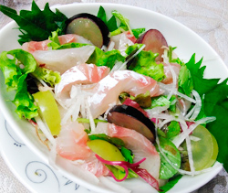

お造りサラダ風
- 調理時間：20分
- （一人当たり）
- カロリー：118kcal
- たんぱく質：12.4g
- 脂質：3.1g
- 炭水化物：10.8g
- 塩分：1.2g


＜2人分＞
- マダイやアジなどのお刺身
- 100g
- ベビーリーフ
- 1袋
- ミョウガ
- 1個
- 大根
- 50g
- 大葉
- 5枚
- ブドウ（今回はシャインマスカット、藤稔）
- 5～10粒
- ワサビ醤油
- 適量


- お刺身は、食べやすい大きさに切る。
- ミョウガは縦半分に切った後、薄切り。
大根は千切り。
ブドウは1粒を6～8等分に切る。
ベビーリーフ、大葉は洗って水気を切っておく。 - 器に盛り付け、ワサビ醤油を添えて完成。
お造りサラダ風
真鯛の旬は、春と秋の年2回訪れます。春先の真鯛は「桜鯛」、秋頃の真鯛は「モミジ鯛」と呼ばれます。
桜鯛は産卵期の直前を迎え、白子や卵を蓄えているのが特徴です。ただし産卵直前の真鯛は、栄養が白子や卵にいってしまうので、身がやせ細って脂ののりが少ない場合があります。秋頃のモミジ鯛は再び太り始めるため脂が乗って安定した旨みを楽しむことができます。特に晩秋から冬にかけてはさらに脂の乗りが良くなるのでオススメです。